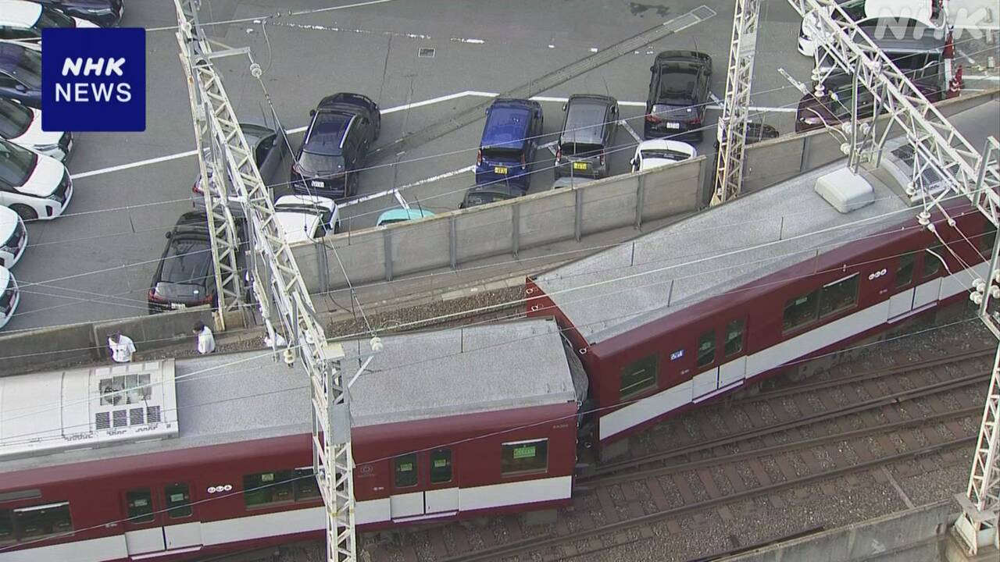
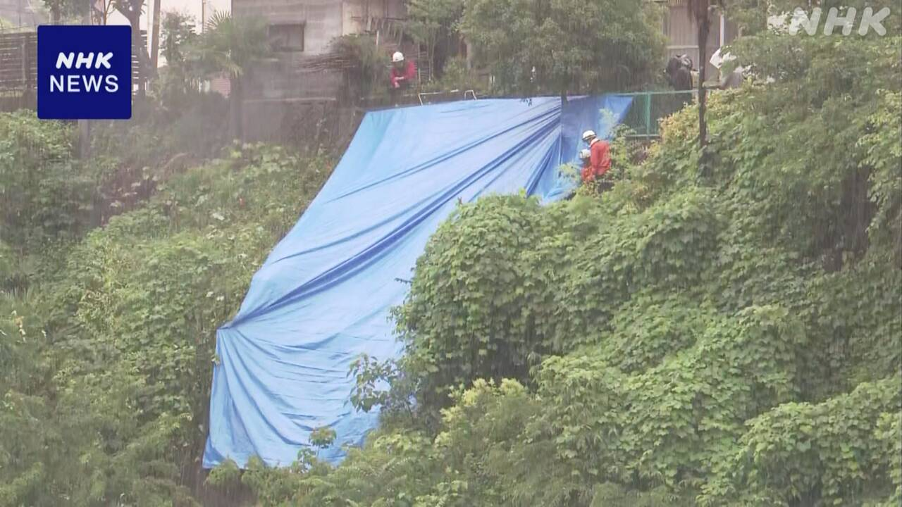

最新ニュース
1️⃣ 京都駅で列車が線路から外れた けがをした人はいない

京都駅で列車の事故がありました。
29日午前5時すぎ、近鉄という鉄道会社の列車が線路から外れました。30人の客が乗っていました。けがをした人はいませんでした。
国土交通省は、列車が120ｍぐらい走ったところで、2つ目と3つ目の車両が線路から外れたと言っています。
国の専門家が事故の原因を調べています。
たくさんの人が列車に乗ることができなくて困っています。
2️⃣ ベネズエラで大きい地震 「28日までに1450人が亡くなった」
24日、ベネズエラで大きい地震がありました。マグニチュード7より大きい地震が2回ありました。ベネズエラの政府は、28日までに1450人が亡くなったと言っています。774の建物が壊れました。189の建物は全部壊れました。
地震が起こったあと、たくさんの国から、人を助けるための専門の人たちが来ました。壊れた建物の中にいる人をさがして助けています。家に帰ることができないために、外で寝ている人がたくさんいます。ベネズエラの政府は困っている人を早く助けようとしています。
3️⃣ 山梨県で震度6弱の大きい地震があった

26日の夜、山梨県で大きい地震がありました。気象庁は、7月3日ぐらいまでは、大きい地震に気をつけるように言っています。
地震の揺れの大きさは、富士河口湖町で震度6弱でした。富士河口湖町の近くには富士山があります。専門家は「この地震は富士山の火山の活動と関係がない」と話しています。気象庁は、富士山を調べているデータに、特に変わったところはないと言っています。
4️⃣ ヨーロッパでとても暑い日が続いている
ヨーロッパで、とても暑い日が続いています。
フランスやドイツ、チェコでは、気温が40℃以上の日もありました。暑さが原因で亡くなった人がたくさんいます。
28日、WHO＝世界保健機関の事務局長は、「ヨーロッパで、暑さが原因で亡くなった人は、いつもの年より1300人以上多くなっている」とSNSに書きました。
そして「ヨーロッパは温暖化がとても早く進んでいる。ヨーロッパの建物は、暑さから人を守ることができない。どの国も暑さから人をしっかり守ろう」と書きました。
- 〜がある / 〜がいる
- 〜から
- 〜という
- 〜ている / 〜でいる
- 〜ところ
- 〜くらい / 〜ぐらい
- 〜なくて
- 〜ことができる
- 〜こと
- 〜より
- 〜までに
- 〜まで
- 〜後 / 〜あと
- 〜ため
- 〜中
- 〜ため(に)
- 〜として
- 〜としている
- 〜ように
- 〜ても / 〜でも
- 〜以上
vebaev.github.io
Generated: 2026-06-29 14:05:16 UTC